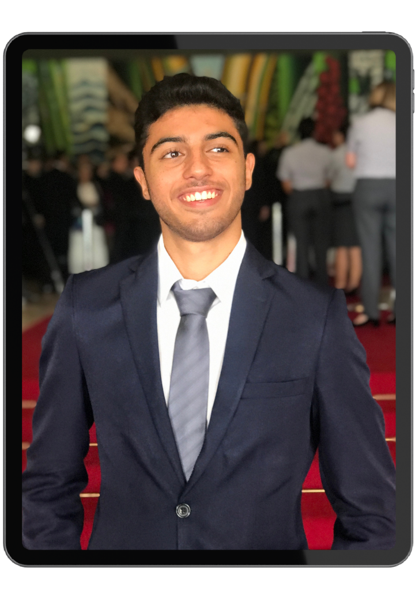

Pedro
Corbelino
Engenharia de Computação - UnB

Engenharia de Computação - UnB
Entusiasta do mundo da tecnologia, atualmente estou em meu 5º Semestre em Engenharia de Computação pela Unversidade de Brasília.
Estagiava auxiliando na coleta, tratamento e disposição de dados macroenomiconômicos, utilizando pacote Microsoft Office. Além disso, era responsável por automatizar a coleta de dados através da linguagem de programação R.
Atuação no acompanhamento de alunos dos Ensinos Fundamental e Médio nas disciplinas de Matemática e Física, prestando suporte na resolução de exercícios e no esclarecimento de dúvidas.
Atuação no programa de monitoria IEMonit, do Departamento de Economia da UnB, com apoio ao docente em aulas e avaliações, atendimento a estudantes e realização de aulas de reforço no contraturno para revisão de conteúdos e esclarecimento de dúvidas em Introdução à Economia.
Atuação como tutor de Cálculo 1 pelo Departamento de Matemática e pelo Programa de Melhoramento Contínuo da Faculdade de Tecnologia, com aulas de reforço, atendimentos, resolução de exercícios e apoio aos estudantes e docentes.
Ao longo da minha trajetória acadêmica, venho atuando em programas de tutoria e monitoria,especialmente nas áreas de Cálculo, Matemática e Economia, desenvolvendo habilidades em resolução de problemas, comunicação e trabalho em equipe.